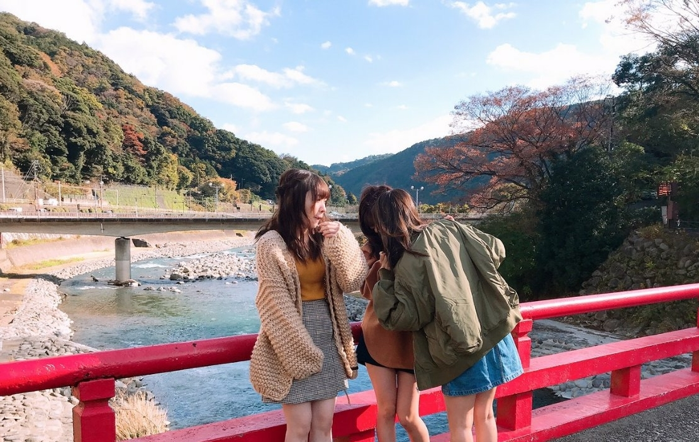
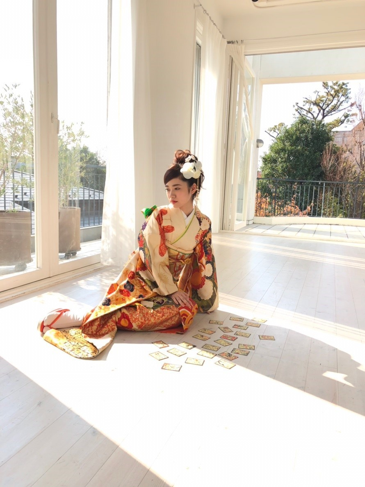
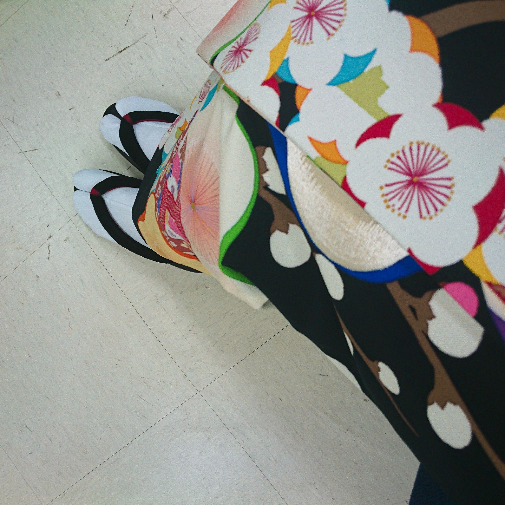

2020/0120Monチェだぜ

ひなこに突進されてる、、、

たい焼きは頭から食べる気がします！
寺田蘭世です。☺️
撮影をしてその日の夜は
さゆりんご軍団で新年会をしました。
琴子とはお仕事も一緒で、丸一日一緒にいました
こんなに、毎日お仕事でメンバーと会うのにプライベートも共にする
これって素敵だなーって
これからも大切にしたいです。☺️
だいぶ遅くなりましたが
新成人の皆さん
おめでとうございます。
去年は沢山振り袖を着させて頂く機会がありました。


赤
白
黒が昔から好きな色なのですが
色んな撮影で全て制覇できて
プライベートでは着ませんでしたが
どれも素敵で思い出です！！
お知らせ
ニュータイプさんの取材をさせていただきました！
もう、バレンタインも意識した内容になっていてもう2月
あっという間
数日前にはソロで月刊エンタメさんの撮影をしてきました。
凄く楽しかったです
お楽しみに☺️
最後まで読んでくださり、ありがとうございます！
いつもありがとう！
また、更新します！
2020/01/20 14:06
コメント(355)
さいこう！
すき
チェだぜ！
激突じゃ〜〜笑笑
蘭世ブログ更新ありがと！
今年も宜しくね〜
今年も宜しくね〜
ブログ更新ありがとうー
大好きでー
大好きでー
ブログありがとう！あけましておめでとう！これからもよろしくね！
ブログ更新ありがとう！！
撮影お疲れさま楽しみ〜！
撮影お疲れさま楽しみ〜！
なんて可愛いんですか早く会いたいです
バレンタインが終わればバスラだね〜
ブログ更新ありがとう
ライブ初日以外当たりませんでした泣
とりあえず初日はよろしくお願いします
1次で当てたからアリーナだといいな
今回は短めです
ごめんなさい
いつもありがとう
ちっぷ
ライブ初日以外当たりませんでした泣
とりあえず初日はよろしくお願いします
1次で当てたからアリーナだといいな
今回は短めです
ごめんなさい
いつもありがとう
ちっぷ
蘭世ちゃんおつかれさま！
めっちゃ写真いい、着物がすんごい可愛い
月刊エンタメ楽しみです！
月刊エンタメ楽しみです！
蘭世さんブログ更新ありがとうございます！！
撮影のお仕事多くて嬉しいです。
めちゃくちゃ楽しみにしてます！
では！
だにえる
撮影のお仕事多くて嬉しいです。
めちゃくちゃ楽しみにしてます！
では！
だにえる
更新ありがとう！写真楽しみにしてます！
ブログありがとう！
もう蘭世さんの成人式から1年経ったんや！1年って早い(--;)
メンバーと一緒にいる蘭世さん一番楽しそうでほっこりします。
もう蘭世さんの成人式から1年経ったんや！1年って早い(--;)
メンバーと一緒にいる蘭世さん一番楽しそうでほっこりします。
蘭世ちゃんブログありがとうー！
赤、白、黒俺も昔から大好き！
好きなサッカーチームの色だけど、
このトリコロールが一番好き！
風邪に気をつけてねー！
えいえいおー！
赤、白、黒俺も昔から大好き！
好きなサッカーチームの色だけど、
このトリコロールが一番好き！
風邪に気をつけてねー！
えいえいおー！
チェだぜ！って聞いたことあるなーって思ってたらネタパレのやつじゃんかw
あれ最高だったよね。チェだぜを今年の流行にしようぜ！蘭世もめっちゃ広めてね
あれ最高だったよね。チェだぜを今年の流行にしようぜ！蘭世もめっちゃ広めてね
ブログ更新ありがとう！
珍しい時間帯での更新に驚きです笑笑
突進される蘭世もまた良きかな！
それに着物を着てる蘭世凄く美しいです！
珍しい時間帯での更新に驚きです笑笑
突進される蘭世もまた良きかな！
それに着物を着てる蘭世凄く美しいです！
わぁ〜〜！ブログ更新ありがとう♡
こんなお時間に、珍しい…！
最近は2期生の皆さんとのお写真を
多く見てる気がします☺️
幸せです…
私はたい焼きはしっぽから食べる！
お仕事もプライベートも一緒に過ごせる仲間って
素敵やなぁ〜って
寺田さんは成人式からもう一年！
早いものですよね…
どの振袖も素敵でした
乃木神社で着ていた赤色の振袖は
寺田さんののだわりがいっぱいつまってて
やっぱり一番すきです！
私も、赤白黒どれも大好き！
ソログラビア楽しみだなぁ…
日々好きを更新させてくるから
ほんとにすごい…
楽しみにしてます☺️
こちらこそいつもありがと〜
次も楽しみにしてます◎
大好き 好きぴ
ゆうき( ゆっちゃん )
こんなお時間に、珍しい…！
最近は2期生の皆さんとのお写真を
多く見てる気がします☺️
幸せです…
私はたい焼きはしっぽから食べる！
お仕事もプライベートも一緒に過ごせる仲間って
素敵やなぁ〜って
寺田さんは成人式からもう一年！
早いものですよね…
どの振袖も素敵でした
乃木神社で着ていた赤色の振袖は
寺田さんののだわりがいっぱいつまってて
やっぱり一番すきです！
私も、赤白黒どれも大好き！
ソログラビア楽しみだなぁ…
日々好きを更新させてくるから
ほんとにすごい…
楽しみにしてます☺️
こちらこそいつもありがと〜
次も楽しみにしてます◎
大好き 好きぴ
ゆうき( ゆっちゃん )
ブログ更新ありがとう。
かわいすぎます！
こうしてブログで頑張りを目にできるのってすごく幸せなことなんだなと思います！
バスラ2日目行きます！
蘭世を見れるのがすごく楽しみです！
これからも応援してます
かわいすぎます！
こうしてブログで頑張りを目にできるのってすごく幸せなことなんだなと思います！
バスラ2日目行きます！
蘭世を見れるのがすごく楽しみです！
これからも応援してます
らんぜ
たい焼き自分も頭から食べるよー。
しっぽの硬いところを最後に楽しみたいもん。
たい焼き自分も頭から食べるよー。
しっぽの硬いところを最後に楽しみたいもん。
本日もえいえいおー！！
ブログ更新ありがとうございます 私も鯛焼きは頭から食べたいと思います(チョロスケ)
私も鯛焼きは頭から食べたいと思います(チョロスケ)
軍団のご飯会楽しそうだったなぁ...いつか軍団でライブができるまで全力で応援します！
もうバレンタインか...チョコほすぅぃ
絶対見ます！また待ってます！
軍団のご飯会楽しそうだったなぁ...いつか軍団でライブができるまで全力で応援します！
もうバレンタインか...チョコほすぅぃ
絶対見ます！また待ってます！
蘭世さんブログ更新ありがとうございます！
日奈子とみり愛とのペアは意外と珍しくて新鮮な感じです
僕もたい焼きは頭から食べますよー！一緒だー！
さゆりんご軍団の新年会、指当て失敗しました
新成人の皆さん成人おめでとうございますですね、二期生最年少だったみり愛ちゃんがこんなに大人になるなんて、時代は早いですね
赤白黒は蘭世さんほんとにあいますよね、シンプルだけどとても良い色です
ニュータイプ！またもや二期生特集！最高のバレンタインになりそうです
月刊エンタメさんもソロなんですね！おめでとうございます！
楽しみにしてますね！
こちらこそいつもありがとうございます！！！！
大好きです、これからもよろしくお願いします
UY
日奈子とみり愛とのペアは意外と珍しくて新鮮な感じです
僕もたい焼きは頭から食べますよー！一緒だー！
さゆりんご軍団の新年会、指当て失敗しました
新成人の皆さん成人おめでとうございますですね、二期生最年少だったみり愛ちゃんがこんなに大人になるなんて、時代は早いですね
赤白黒は蘭世さんほんとにあいますよね、シンプルだけどとても良い色です
ニュータイプ！またもや二期生特集！最高のバレンタインになりそうです
月刊エンタメさんもソロなんですね！おめでとうございます！
楽しみにしてますね！
こちらこそいつもありがとうございます！！！！
大好きです、これからもよろしくお願いします
UY
蘭世さん、ブログ更新ありがとうございます。
成人式からもう1年経ったんですよね。時が経つのは早いというか、本当にあっという間。あの時は振袖姿の美しさに言葉を失う日々でした。今もですけど。
さゆりんご軍団の新年会、かりんちゃんのInstagramで拝見しました。計画中も進んでいますし、2020年もさゆりんご軍団の活動が大きくなっていきそうですね！
特にここ最近、蘭世さんのソログラビアは破壊力増し増し&毎回違う一面が見られるので、月刊エンタメさんではどんな姿を見られるのか、心待ちにしています。
そろそろ花粉症の季節、インフルエンザも流行りだしていますので、お身体にはお気をつけくださいね。
成人式からもう1年経ったんですよね。時が経つのは早いというか、本当にあっという間。あの時は振袖姿の美しさに言葉を失う日々でした。今もですけど。
さゆりんご軍団の新年会、かりんちゃんのInstagramで拝見しました。計画中も進んでいますし、2020年もさゆりんご軍団の活動が大きくなっていきそうですね！
特にここ最近、蘭世さんのソログラビアは破壊力増し増し&毎回違う一面が見られるので、月刊エンタメさんではどんな姿を見られるのか、心待ちにしています。
そろそろ花粉症の季節、インフルエンザも流行りだしていますので、お身体にはお気をつけくださいね。
琴蘭最強！
色々楽しみにしてます！
色々楽しみにしてます！
浴衣も振袖も似合っててまじ可愛い！！
めっちゃすきすき！！
雑誌も楽しみに待ってます☺️
ちなみに僕はたい焼きは尻尾から食べます。
いろは。
めっちゃすきすき！！
雑誌も楽しみに待ってます☺️
ちなみに僕はたい焼きは尻尾から食べます。
いろは。
ブログ更新ありがとう
僕もたい焼き頭から食べますよ
最初にあんこたっぷり食べて最後の方に甘さ控えめになるのが良くて頭から食べてます
蘭世が載ってる雑誌全部買いますのでまた色々と感想伝えますね
こちらこそいつもありがとうございます
これからも何卒よろしくお願いします
僕もたい焼き頭から食べますよ
最初にあんこたっぷり食べて最後の方に甘さ控えめになるのが良くて頭から食べてます
蘭世が載ってる雑誌全部買いますのでまた色々と感想伝えますね
こちらこそいつもありがとうございます
これからも何卒よろしくお願いします
蘭世ブログ更新ありがとう！
僕もたい焼きは頭から食べます！！笑笑
メンバーと一緒にいて笑顔の蘭世が好き〜〜
成人式ね
僕も成人してもう一年たったのか〜〜
まだ一年なのかな〜〜
なんて思ったりします
去年は色んなところで蘭世の振袖姿見れて良かったな！
今年はまた違った姿を見れたら良いな！
月刊エンタメ楽しみにしてるね！！
寒さには注意だよ！！
体調管理には気を付けてね！！
ずっとずっと応援してるよ！！
人として大好きです
僕もたい焼きは頭から食べます！！笑笑
メンバーと一緒にいて笑顔の蘭世が好き〜〜
成人式ね
僕も成人してもう一年たったのか〜〜
まだ一年なのかな〜〜
なんて思ったりします
去年は色んなところで蘭世の振袖姿見れて良かったな！
今年はまた違った姿を見れたら良いな！
月刊エンタメ楽しみにしてるね！！
寒さには注意だよ！！
体調管理には気を付けてね！！
ずっとずっと応援してるよ！！
人として大好きです
蘭世ーーー更新ありがとうーーーーー
寒いから体調には気をつけね
ブログありがとうございます！
どんな服でも着こなす蘭世さんですが、和服は一段と似合っていて素敵です！挙げた3色はまさに蘭世さんにピッタリですね！
エンタメも楽しみです！
どんな服でも着こなす蘭世さんですが、和服は一段と似合っていて素敵です！挙げた3色はまさに蘭世さんにピッタリですね！
エンタメも楽しみです！
蘭世さんこんにちは♪
俺も頭から食べるよd(⌒ー⌒)!
軍団で新年会したんだね(〃^ー^〃)
楽しそう♪
取材、撮影お疲れ様!
どちらもチェックするね(*^^*)
今日も１日HAPPYを
俺も頭から食べるよd(⌒ー⌒)!
軍団で新年会したんだね(〃^ー^〃)
楽しそう♪
取材、撮影お疲れ様!
どちらもチェックするね(*^^*)
今日も１日HAPPYを
蘭世〜！こんにちは〜
ブログ更新ありがとう！
ヤングマガジンのやつだね！
浴衣も洋服の衣装も可愛かったよ〜
新年会の写真かりんちゃんがインスタにアップしてたね！
指だけだったけど(笑)
蘭世沢山振り袖着てたよね〜
でもやっぱり1番好きなのは乃木神社の時に着てた赤いやつかなぁ
あれが1番蘭世っぽい！
2枚目の振り袖の写真は地元の成人式で着たやつ？
なんかの雑誌のやつでおれの記憶に残ってないだけだったらごめん(笑)
雑誌めちゃくちゃ楽しみにしてる！
握手会がなくて雑誌とかブログとかテレビとかでしか蘭世を見れないからね〜
4月に握手会があったとしても半年近く蘭世と会えてないことになるからほんとにしんどい…
沢山伝えたいこともあるからお手紙に書いて送ろうと思ってるけどやっぱり直接伝えたいからね！
こちらこそいつもありがとう！
またブログ楽しみにしてるね！
じゃあまた！
ブログ更新ありがとう！
ヤングマガジンのやつだね！
浴衣も洋服の衣装も可愛かったよ〜
新年会の写真かりんちゃんがインスタにアップしてたね！
指だけだったけど(笑)
蘭世沢山振り袖着てたよね〜
でもやっぱり1番好きなのは乃木神社の時に着てた赤いやつかなぁ
あれが1番蘭世っぽい！
2枚目の振り袖の写真は地元の成人式で着たやつ？
なんかの雑誌のやつでおれの記憶に残ってないだけだったらごめん(笑)
雑誌めちゃくちゃ楽しみにしてる！
握手会がなくて雑誌とかブログとかテレビとかでしか蘭世を見れないからね〜
4月に握手会があったとしても半年近く蘭世と会えてないことになるからほんとにしんどい…
沢山伝えたいこともあるからお手紙に書いて送ろうと思ってるけどやっぱり直接伝えたいからね！
こちらこそいつもありがとう！
またブログ楽しみにしてるね！
じゃあまた！
やぁ(｡･ω･)ﾉﾞ最愛なる蘭世
ブログ更新ありがとう！
てかメールのお返事一個前のブログに舌と思ったら更新されてた笑
何ですかこの写真のわちゃわちゃ感最高ですか！(´▽｀)
俺もたい焼きは頭からやわ笑
そういえば755にも載ってたな
てか琴子とちゃんと一緒って事は月刊ニュータイプのお仕事かな？
俺も素敵やな～って思う。
かりんちゃんとかのインスタのストーリーとかに卒業生とか出てくると良いな～こういう関係って思う。
大事にしていかないとね。
去年の振り袖はすごく綺麗だったな～
良い色がぁ沢山あってそれも蘭世
お、ニュータイプまた楽しみすぎるやん。
おおおお！！月刊エンタメさん最高ですありがとうございます
めちゃくちゃ楽しみすぎるんですけど
蘭世
蘭世
きっとまた後で(｡･ω･)ﾉﾞ
新年会いいなー
一緒にいたかったw
一緒にいたかったw
今日も、一日お疲れさまです。
洋服の姿もいいけど、着物も、良く似合ってる。
洋服の姿もいいけど、着物も、良く似合ってる。
新年会いいなー
一緒にいたかったw
一緒にいたかったw
蘭世さんブログ更新ありがとうございます！
たい焼き、僕も頭から食べる人間です。奇遇ですね笑
新年会の様子はかりんちゃんのインスタで少しだけ見ました。
手だけ確認できて、しっかり蘭世さんの手を当てることが出来ました笑
成人になりました、今年も何卒変わらずよろしくお願いしますね
ニュータイプも月刊エンタメもしっかり購入して見ます！！
お身体にきをつけてお過ごしください
大好きです。
ユウキ
たい焼き、僕も頭から食べる人間です。奇遇ですね笑
新年会の様子はかりんちゃんのインスタで少しだけ見ました。
手だけ確認できて、しっかり蘭世さんの手を当てることが出来ました笑
成人になりました、今年も何卒変わらずよろしくお願いしますね
ニュータイプも月刊エンタメもしっかり購入して見ます！！
お身体にきをつけてお過ごしください
大好きです。
ユウキ
蘭世！ブログ更新ありがとう！！
新年会できる友達大切にしないとなって
思いました。。。
蘭世の振袖姿はやっぱり綺麗ですね、、、
今年僕もやっと成人出来ました(；＿；)
次の更新もまってるね！！！
新年会できる友達大切にしないとなって
思いました。。。
蘭世の振袖姿はやっぱり綺麗ですね、、、
今年僕もやっと成人出来ました(；＿；)
次の更新もまってるね！！！
蘭世さんありがとうございます！！！
今日もあなたは輝いてらっしゃる！！
今日もあなたは輝いてらっしゃる！！
チェだぜ！！！
すっげーかわいい❤
振袖綺麗素敵好き
更新ありがとうーー！！
更新ありがとうーー！！
ブログ更新ありがとうございます！
雑誌の解禁楽しみにしてます。
雑誌の解禁楽しみにしてます。
更新ありがとう！
次のブログ待ってまーす
次のブログ待ってまーす
振袖が可愛すぎる
ブログありがとう！
新年会いいですね〜 うらやましいです！
こちらこそいつもありがとう(^^)
新年会いいですね〜 うらやましいです！
こちらこそいつもありがとう(^^)
着物姿、美しい
今回は座ってる写真やけど、蘭世は立ち姿も美しいよの
今回は座ってる写真やけど、蘭世は立ち姿も美しいよの


風邪ひきなや